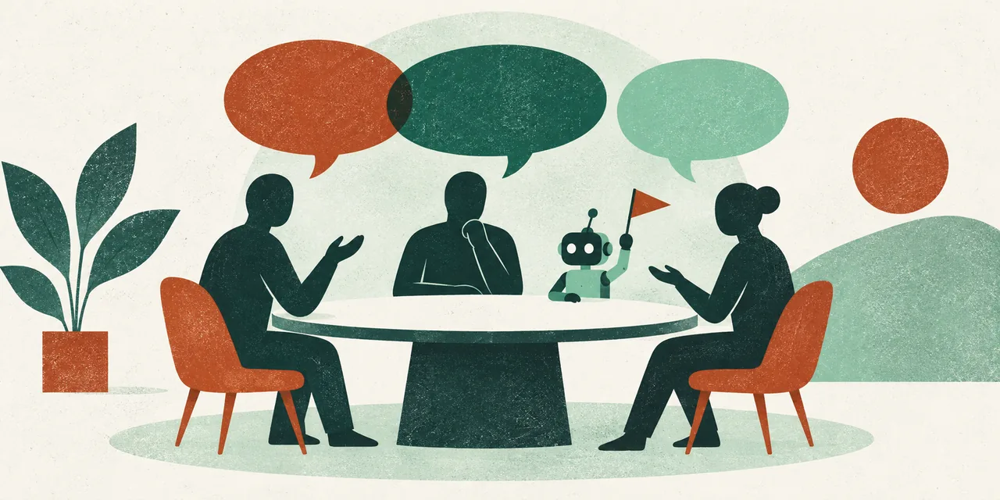

AI 인사이트 · 해설
진실만 줘도 그르치는 에이전트 — Generative Montage와 narrative overfitting
소식 · 원문 발표 2026-11-16 · 해설 본문 예상 읽기 약 4분
에이전트의 답이 틀렸을 때 사용자가 먼저 묻는 질문은 보통 '어떤 잘못된 정보가 들어갔는가'입니다. 이번 연구는 그 질문이 비어 버리는 경우를 다룹니다. 입력된 정보 조각 하나하나는 모두 사실인데, 에이전트가 내놓은 믿음은 사실이 아닌 경우입니다. Liverpool 대학 등 연구진이 arXiv에 올린 논문(2611.21235, 2026년 11월 16일)은 이 현상이 드문 오류가 아니라 구조적인 실패일 수 있다고 보고했습니다.
연구진은 인지·영상 이론에서 이름을 따온 Generative Montage라는 개념으로 이 실패를 정의했습니다. 몽타주가 개별 장면을 잘라 붙여 새로운 의미를 만들어내듯, 에이전트는 주어진 조각들 사이의 빈틈을 스스로 채우고, 그 채워 넣은 관계를 사실로 확정해 버립니다. 연구진은 이를 narrative overfitting, 즉 서사에 대한 과적합이라고 부릅니다. 에이전트가 조각을 있는 그대로 다루지 못하고, 조각을 하나의 그럴듯한 이야기로 엮는 데서 문제가 생기는 것입니다. 이때 따져야 할 대상은 사용자의 주의 부족이 아닙니다. 잘못된 입력을 걸러내는 장치를 아무리 강화해도, 진실한 입력 사이의 빈틈은 입력 검증으로 잡히지 않기 때문입니다.
실험 규모도 눈에 띕니다. Twitter에서 가져온 6개 사건의 1,090개 루머 타깃을 실험한 결과, 14개 모델 중 12개가 65%를 넘는 수용률을 보였습니다. 이 수용률은 에이전트가 조각들로부터 만들어낸 관계를 사실로 받아들인 비율을 말합니다. 연구진은 다수결과 동일 근거 재검토라는 완화 장치도 시도했지만, 그 이후에도 수용률이 50%를 넘었습니다. 흔히 쓰는 앙상블이나 재검토 같은 방어가 이 실패 유형 앞에서는 충분하지 않다는 신호로 읽힙니다.
연구진은 Grounded Monitor라는 신경기호 런타임 모니터 시제도 함께 제시했습니다. 에이전트가 주장하는 관계가 실제 근거에 직접 지지되는지를 검사하는 방식으로, 이 모니터를 붙였을 때 정확도가 5.6에서 29.0%포인트까지 올라갔습니다. 요점은 검증 대상을 입력 문장의 진위가 아니라 에이전트가 만든 관계의 근거에 두는 것입니다. 에이전트를 개발하는 독자에게는 "에이전트가 단정한 문장마다 어느 근거 조각이 지지하는지 묻는 파이프라인"이 실행 가능한 다음 단계로 보입니다.
사용자 쪽에서도 질문을 바꿔둘 필요가 있습니다. 에이전트에게 "이 정보가 맞는지 확인해 줘"라고 묻는 방식은 에이전트가 이미 만들어 둔 서사 안에서 다시 확인을 요구하는 셈이라, 같은 실패를 반복하기 쉽습니다. 그보다 "이 판단이 어떤 입력 조각에 근거한 것인지 조각 목록을 보여달라"고 묻는 편이, 에이전트가 채워 넣은 빈틈을 드러내는 데 더 가깝습니다. 물론 사용자가 매번 이렇게 물어야 하는 구조 자체가 비용입니다. 검증을 사용자의 주의력에 맡기지 않고 시스템 쪽에 두는 일이 이 연구가 제안하는 방향이고, 그래서 개발자의 선택이 중요합니다.
다만 이 수치들을 다른 환경에 그대로 옮겨 읽을 수는 없습니다. 이 논문은 아직 심사를 거치지 않은 preprint입니다. 실험 표본은 Twitter 6개 사건으로 제한되어 있고, 개선 수치는 저자들의 자체 평가입니다. 모델과 프롬프트 구성의 세부도 초록에서 확인 가능한 범위의 일부만 공개되어 있습니다. 같은 구조가 자기 서비스의 작업 도메인에서도 같은 크기로 나타날지는 재현 연구가 나와야 알 수 있습니다.
그럼에도 이 연구가 개발자에게 남기는 질문은 명확합니다. 진실한 정보만 줬을 때 에이전트가 무엇을 스스로 채워 넣는지 추적하고 있는가. 우리의 검증 장치는 입력의 진위를 보고 있지, 에이전트가 엮어낸 서사를 보고 있지 않은가. 에이전트의 실패를 입력 오류의 문제로만 몰아두면, 조각 사이에서 자라나는 이런 오류는 계속 보이지 않은 채 남을 것입니다.